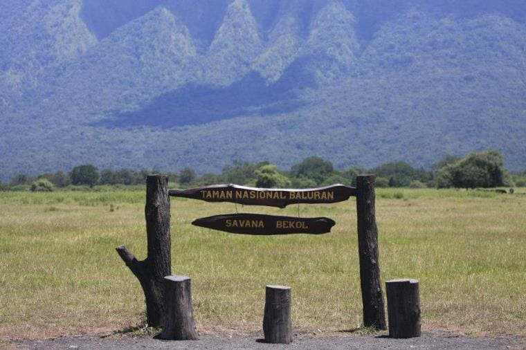
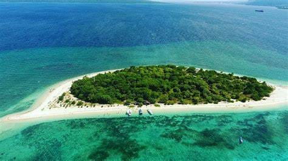
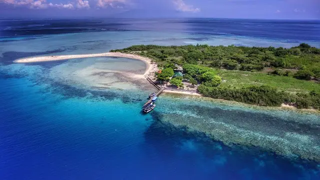

Destinasi Banyuwangi Utara
Temukan keindahan alam utara Banyuwangi dengan pemandangan pegunungan, danau, dan ekowisata.

Taman Nasional Baluran
Taman Nasional dijuluki Africa van Java dengan savana luas, kawanan banteng, rusa, dan merak. Pengunjung bisa menjelajahi hutan, pantai Bama, dan spot sunrise terbaik.

Tabuhan
Destinasi laut utara dengan pemandangan sunset dan snorkeling yang tenang.

Pulau Menjangan
Pulau kecil di Taman Nasional Bali Barat, terkenal dengan terumbu karang indah. Spot diving dan snorkeling terbaik dengan air jernih, habitat rusa liar di sekitar pulau.

Grand Watudodol
Pantai unik dengan batu besar di tepi jalan, menawarkan pemandangan Selat Bali. Cocok untuk snorkeling, sunset, dan spot foto dengan latar pegunungan dan laut.